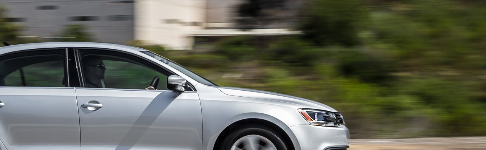

ExectGroup  Наш опыт
Реализованные проекты
Внедрение культуры первоклассного сервиса в компании среднего бизнеса
Наш опыт
Реализованные проекты
Внедрение культуры первоклассного сервиса в компании среднего бизнеса

Клиент
Фольксваген Групп Рус
Задача
Внедрить стандарты и настроить бизнес-процессы для более эффективной работы подразделений послепродажного обслуживания с целью увеличения рентабельности и выстраивания прозрачной и продуктивной системы управления
Хотите аналогичный проект?
Сообщите нам ваши потребности и мы предложим оптимальный вариант!
Звоните: +7 495 937-61-37
Масштаб проекта
36 официальных дилерских центров по всей территории Российской
Длительность
9 месяцев
Решение
Был осуществлен глобальный консалтинговый проект в области постановки и налаживания бизнес-процессов послепродажного обслуживания дилерской сети Volkswagen
Реализовано командой
EXECT Auto Business Solutions
Услуги в рамках проекта


Видео
EXECT Business Training проводит конференцию в рамках выставки HR&Trainings EXPO
Репортаж канала «Москва 24» о том, как проходил праздник, приуроченный ко Дню города Москва
Отзывы Клиентов
Вы тонете в делах и ничего не успеваете. Ваши нервы на пределе, потому что, хватаясь то за одно, то за другое, вы все время упускаете что-то важное. Вам кажется, что клубок ваших проблем распутать уже невозможно. Но выход есть. Дэвид Аллен написал эту книгу, чтобы вы могли стать более эффективным в делах и при этом имели возможность расслабиться, когда нужно. Поставив рутину на автопилот, вы обретете свободу действий. Вы научитесь отделять второстепенные дела от важных, верно ставить цели и распределять приоритеты, работать со входящей информацией и задачами. Главное - ясность сознания и упорядоченность мыслей. А как этого добиться, вы узнаете в книге. Работайте продуктивно и без стресса! Книга принесет наибольшую пользу менеджерам, а также всем, кому давно пора привести свои дела в порядок.
That's 2 clveer by half and 2x2 clever 4 me. Thanks!